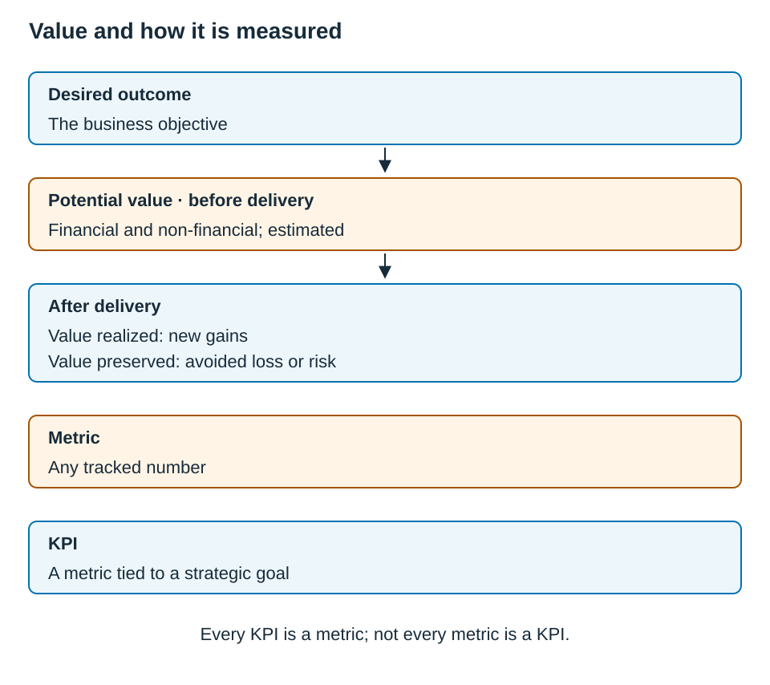

Chapter 8 — Value
8.0 — Domain Snapshot
| Item | Detail |
|---|---|
| Blueprint weight | 10% |
| Questions per ECBA exam | 5 out of 50 |
| Source | BABOK Guide |
| Activity Statements | 8.1, 8.2, 8.3, 8.4 |
| BACCM concept | Value — the worth, importance, or usefulness of something to a stakeholder in a context |
| A.S. | Full Activity Statement |
|---|---|
| 8.1 | Confirm understanding of desired outcomes aligned with business objectives. |
| 8.2 | Support identification of value opportunities and help address barriers to delivery. |
| 8.3 | Describe how solutions meet business goals and relay information effectively for stakeholders. |
| 8.4 | Support defining key performance indicators (KPIs) aligned with value to measure success. |
Domain 8 is built on the BACCM concept of Value, from Chapter 1, section 1.2, which is the worth, importance, or usefulness of something to a stakeholder in a context. The question this domain asks is never just “does the solution work?” but rather “does it help the enterprise and its stakeholders achieve the intended outcomes?” The verbs, which are confirm, support, describe, and relay, keep the ECBA scope clear: you confirm, compare, translate, and flag, and you clarify who is responsible for objectives, recommendations, and the official KPI set before making those decisions.
The chapter’s hardest distinction is how loose ideas of “value” become something measurable, and where a metric stops and a KPI begins. Figure 8.1 shows the path.
Figure 8.1 — From outcome to realized or preserved value, and how it is measured

| Stage | Meaning |
|---|---|
| Desired outcome | the business objective |
| Potential value | financial and non-financial, estimated before delivery |
| After delivery | value realized (new gains) or value preserved (avoided loss or risk) |
| Metric | any tracked number |
| KPI | a metric tied to a strategic goal — every KPI is a metric, but not every metric is a KPI |
💡 Exam Tips — Domain 8
- Distinguish a goal from an objective: an objective has a measure, a target, and a timeframe.
- “Do nothing” is a legitimate BABOK recommendation. Questions check whether you will accept it when the value evidence supports it.
- KPIs are a subset of metrics, because a metric becomes a KPI only when it is tied to a strategic goal or objective.
- Leading indicators predict, while lagging indicators confirm. Neither is universally better. Select indicators according to the information and decisions needed.
Which activity statement is this? Here is a quick orientation before the detail.
| If the scenario is about… | A.S. |
|---|---|
| Confirming what success means before solution work goes deeper | 8.1 |
| Comparing value across options; flagging a barrier to value | 8.2 |
| Translating how a solution supports the goal, for an audience | 8.3 |
| Defining measures that show whether value is realized | 8.4 |
8.1 — A.S. 8.1: Confirm Desired Outcomes
Activity Statement 8.1: “Confirm understanding of desired outcomes aligned with business objectives.”
Reference Map: BABOK §6.2
Glossary: Define Future State, Goal (business goal), Metrics and KPIs, Objective (business objective).
Activity statement: IIBA ECBA Exam Blueprint V1.1; source mapping: ECBA Reference Map.
Source: BABOK Guide — Define Future State.
What this means. Before the team goes deeper into solution work, you confirm what success should look like: the desired outcomes, the business goals, the objectives, the constraints, and the potential value, and whether they are understood clearly enough to guide the work. The future state is a set of necessary conditions for meeting the need, rather than a detailed implementation plan.
How it is tested. Practice classifying a statement as a goal or an objective, and the measurable target is the tell. A second angle is a scope check, where a sponsor states a vague outcome, and the keyed answer confirms and helps clarify a measurable objective under guidance, rather than authoring it alone or jumping to solution work.
Goals vs. Objectives — the Headline Distinction
You met this in Chapter 1, section 1.2, and Domain 8 is where the exam tests it hardest. The line is precise, as the table below shows.
| Concept | Meaning | Example | Tell |
|---|---|---|---|
| Business goal | Broad, directional, qualitative intent | “Improve customer satisfaction” | No measure or timeframe |
| Business objective | Specific, measurable, time-bound target | “Raise the customer-satisfaction score from 72 to 82 by Q4” | Has a baseline, target, measure, or deadline |
A goal describes a desired longer-term condition. Objectives make the desired outcome more specific and link it to measures. Check whether an objective is specific, measurable, achievable, relevant, and time-bounded; the presence of a number alone is not sufficient (BABOK §6.2.4).
🪞 Terminology Alert — goal versus objective. Goals give direction; objectives make the intended result specific enough to assess. Use the context and the SMART checks rather than classifying a statement solely because it contains a number or date. BABOK §6.2.4 describes goals becoming more specific as they are analyzed.
The future state covers more than a target number. Recognize that it also spans solution options and potential value, constraints, organizational structure and culture, capabilities and processes, technology and infrastructure, and policies. For Domain 8, the exam mainly tests desired outcomes and measurable objectives. Recognize that the future state is broader than one metric, but do not try to memorize the full list to recite.
💡 Exam Tip — A.S. 8.1. The safest ECBA action is to confirm alignment and measurability: restate the outcome, check it against the strategy, ask clarifying questions, and help shape a measurable objective under guidance. It is not to invent and finalize the objective independently, and not to jump to designing features.
In Practice — “make customers happier” is not a target. A sponsor says, “We need the new service model to make customers happier,” and the organization’s strategy is built on customer retention. It is tempting either to write a formal objective on the sponsor’s behalf, or to wave the statement through as the objective itself. Neither is the entry-level move. “Happier” points a direction, which is a goal, but it cannot be measured as written. The business analyst restates it, checks with stakeholders how it ties to the retention strategy, and helps shape something measurable, such as a retention or satisfaction target with a number and a timeframe, under guidance.
Exam Focus — A.S. 8.1
Traps. Check three distinctions here. The first is goal versus objective, which is direction as against a measurable, time-bound target. The second is the business analyst authoring the objective, when the business analyst confirms and helps clarify, rather than inventing and finalizing it alone. The third is jumping to a solution, when measurable-outcome alignment comes before feature work.
How questions are framed. Expect three shapes. The first is four statements, with “which is the objective or goal?”, where you find the measure and the timeframe. The second is a vague sponsor outcome, where the keyed answer confirms and helps shape a measurable objective. The third is a statement that sounds like an objective but has no measure, which is the goal in disguise.
Exam Lens C8-EL01
A.S.: 8.1
Stem. A sponsor says, “We need the new service model to make customers happier.” The organization’s strategy focuses on improving customer retention. What should the ECBA-level BA do next?
Options.
- A. Convert the statement into a formal objective independently and add it to the future-state description.
- B. Confirm the desired outcome with stakeholders and help clarify a measurable objective aligned to customer retention.
- C. Ask the solution team to start designing service features, since the business goal is already clear.
- D. Treat the statement as a complete business objective, since it describes the intended improvement.
C8-EL01 — Show answer and explanation
C8-EL01 — Answer: B
| ID | Answer | Domain | A.S. | Type | Difficulty | Source |
|---|---|---|---|---|---|---|
| C8-EL01 | B | 8 | 8.1 | situation | medium | BABOK §6.2 |
A. The assigned supporting role calls for stakeholder confirmation rather than independent finalization.
B. Clarifying a measurable, strategically aligned outcome supports Define Future State.
C. Starting feature design skips clarification of what success means.
D. A broad improvement statement lacks a measure and timeframe.
Reasoning (two-step). First distinguish a broad improvement goal from a measurable objective. Then compare independent finalization with collaborative confirmation. The scenario assigns the analyst a supporting role under guidance.
Source detail: BABOK §6.2
Review: A.S. 8.1
8.2 — A.S. 8.2: Identify Value Opportunities
Activity Statement 8.2: “Support identification of value opportunities and help address barriers to delivery.”
Reference Map: BABOK §5.3; BABOK §6.4; BABOK §7.6; BABOK §8.5
Glossary: Analyze Potential Value and Recommend Solution, Assess Enterprise Limitations, Assess Solution Limitations, Do nothing, Enterprise limitation, Financial value, Market value, Potential value, Recommend Actions to Increase Solution Value, Reputational value, Solution limitation, SWOT Analysis.
Activity statement: IIBA ECBA Exam Blueprint V1.1; source mapping: ECBA Reference Map.
Source: BABOK §5.3; BABOK §6.4; BABOK §7.6; BABOK §8.5. Supplementary limitation analysis: BABOK §8.3; BABOK §8.4.
What this means. You help compare the potential value of options, and flag what blocks value from being realized. “Potential” is the key word, because value is estimated before a solution is fully realized, so it carries uncertainty. And value is broader than money, because it spans financial, reputational, and market dimensions.
How it is tested. Practice three question forms here. The first is an option comparison, where the trap is deciding on one factor, such as cheapest, fastest, or most popular. The second is a “do nothing” scenario, where the keyed answer accepts no change because the value evidence supports it. The third is a “works but no value” scenario, keyed to an enterprise limitation.
Potential Value Is More Than Money (Analyze Potential Value)
| Value type | What it means | Example |
|---|---|---|
| Financial | Revenue, cost reduction, ROI, avoided cost | Cutting operational cost 15% by automating manual processing |
| Reputational | Trust, credibility, brand perception | Rebuilding customer trust after a data breach |
| Market | Competitive position or new opportunity | Entering the small-business insurance segment, or gaining a feature competitors lack |
Here is a bridge to Chapter 1: these dimensions cut across the tangible-and-intangible split you met there. Financial value is usually tangible, because you can put a number on it. Reputational value is usually intangible, because it is real but hard to quantify directly. Market value can be either. Do not treat “intangible” as “not real value,” because reputational and market gains are exactly the value that a money-only comparison misses.
A strong comparison weighs benefits, costs, risks, uncertainty, and alignment to objectives together. The fastest option is not automatically best, and neither is the most popular, nor the one with the highest possible benefit if its cost and uncertainty are too high. And because potential value is estimated before realization, it inherently carries uncertainty, so a comparison should weigh the uncertainty around a benefit, rather than just the best-case figure.
And “do nothing” is a legitimate recommendation. If the change costs more than the likely benefit, or its risk is too high, recommending no change, backed by evidence, is sound analysis, rather than surrender.
🪞 Terminology Alert — “do nothing.” In most workplaces, “do nothing” sounds like giving up or wasting the investment. In BABOK, it is an explicitly valid recommendation when the value analysis does not justify action. On the exam, a business analyst recommending no change, with evidence, is demonstrating judgment, so do not reject an option just because it is the do-nothing one.
Barriers to Value: Solution vs. Enterprise Limitations (Assess Solution / Enterprise Limitations)
When value is not appearing, the cause sits either inside the solution or around it, and this is the domain where both halves are taught together, since you met the enterprise side briefly in Chapter 4. The table below sets out the two.
| Barrier | Where it lives | Example |
|---|---|---|
| Solution limitation | Inside the solution — a defect, missing function, performance issue | A portal too slow at peak traffic |
| Enterprise limitation | Around the solution — culture, incentives, process, structure, adoption | Managers reward the old manual process, so the new tool goes unused |
⚠️ Exam Trap — solution versus enterprise limitation. Investigate whether the barrier is internal to the solution (BABOK §8.3) or belongs to its enterprise environment (BABOK §8.4). Removing the solution mentally can help generate a hypothesis, but evidence about components, processes, culture, and interactions must establish the cause. More than one limitation can contribute to the same value gap.
Recommending Actions to Increase Value (Recommend Actions)
When value is blocked, the recommendation types are worth recognizing by their trigger: do nothing, when value is too low or risk is too high; organizational change, when people, roles, or attitudes block value; reduce solution complexity, when there are needless interfaces or handoffs; eliminate redundancy, when one solution can serve common needs; avoid waste, when activities add no value; and identify additional capabilities, when unused functions could provide value; and retire the solution, when it is obsolete, too costly, or no longer fits. SWOT Analysis supports spotting value opportunities and threats. At the ECBA level your verbs are support, help document, raise, and flag, and you do not approve the recommendation alone.
Here is a quick drill. Match the trigger to the recommendation.
| The situation… | Recommendation |
|---|---|
| Managers still reward the old workaround, so the new tool goes unused | Organizational change |
| Two separate tools do the same job for different teams | Eliminate redundancy |
| Too many handoffs and interfaces cause delay and errors | Reduce solution complexity |
| The component is obsolete and costs more than it returns | Retire the solution |
| Cost and risk outweigh the likely benefit | Do nothing |
In Practice — the system worked; the inbox killed it. A new expense-reporting system runs flawlessly, with no defects. Yet most employees still email spreadsheets to finance, because finance never closed the old spreadsheet inbox, and managers still accept submissions that way. Value is not being realized, and the tempting read is that “low usage means the system is failing.” However, run the test: remove the system entirely, and the parallel inbox and the managers’ acceptance of it would still be there. The barrier is around the solution, rather than in it, so it is an enterprise limitation. The business analyst flags that, rather than a phantom solution defect.
Connect Value with Priority and the Change Route
BABOK §5.3 compares requirements using value, urgency, dependencies, risk, and other agreed criteria; revisit priorities as circumstances change. BABOK §6.4 then compares current and future states, identifies gaps and transition states, and develops a Change Strategy and Solution Scope. These connect a value opportunity to an achievable route for delivery. The limitation tasks below are supplementary context to the mapped tasks.
Exam Focus — A.S. 8.2
Traps. Check three distinctions here. The first is a one-factor option choice, because cheapest, fastest, or most popular is not automatically best, so weigh value, cost, risk, and uncertainty together. The second is the idea that “do nothing” is always wrong, when it is a valid, evidence-backed recommendation. The third is treating a value gap as a solution defect, when a working solution can be blocked by an enterprise limitation.
How questions are framed. Expect four shapes. The first is an option comparison keyed to balanced trade-offs, including non-financial value. The second is a low-benefit, high-cost enhancement keyed to do nothing. The third is a “works but no value” scenario keyed to an enterprise limitation. The fourth is a recommendation-type match, for example incentives that block value pointing to organizational change.
Exam Lens C8-EL02
A.S.: 8.2
Stem. A team analyzes a requested enhancement. Stakeholders like the idea, but the expected maintenance cost is high, the benefit is small, and the current process already meets the business objective. What should the ECBA-level BA support?
Options.
- A. Recommend proceeding, because stakeholder enthusiasm is evidence of value.
- B. Flag that “do nothing” may be a valid recommendation, based on the value analysis.
- C. Ask the implementation team to build the enhancement with fewer controls to reduce cost.
- D. Remove the business objective so the enhancement appears more valuable.
C8-EL02 — Show answer and explanation
C8-EL02 — Answer: B
| ID | Answer | Domain | A.S. | Type | Difficulty | Source |
|---|---|---|---|---|---|---|
| C8-EL02 | B | 8 | 8.2 | situation | medium | BABOK §7.6; BABOK §8.5 |
A. Enthusiasm alone does not outweigh the stated benefit and cost evidence.
B. No change can be a valid recommendation when the evidence does not justify an enhancement.
C. Weakening controls to reduce cost does not establish a worthwhile option.
D. Changing the objective to favor an option undermines the evaluation.
Reasoning (two-step). In Step 1, option C weakens controls to rescue a weak option, which is irresponsible, and option D edits the objective to flatter a preferred option, which undermines alignment. You can eliminate both. In Step 2, you choose between A and B. Enthusiasm is not value when the cost is high, the benefit is small, and the objective is already met. The evidence supports no change, and “do nothing” is a legitimate recommendation. Option B fits.
Source detail: BABOK §7.6; BABOK §8.5
Review: A.S. 8.2
8.3 — A.S. 8.3: Communicate How Solutions Meet Goals
Activity Statement 8.3: “Describe how solutions meet business goals and relay information effectively for stakeholders.”
Reference Map: BABOK §4.4; BABOK §7.3
Glossary: Communicate Business Analysis Information, Relay (active translation), Validate Requirements and Designs.
Activity statement: IIBA ECBA Exam Blueprint V1.1; source mapping: ECBA Reference Map.
Source: BABOK Guide — Communicate Business Analysis Information; Validate Requirements and Designs.
What this means. “Relay” here is active, rather than forwarding. You translate solution information into stakeholder understanding, with the right information, timing, format, and language for the audience, and communication is two-way, because you do not assume understanding just because something was sent. A validation lens sits alongside this: a solution can meet its detailed requirements yet still not support the business objective, and that gap must be communicated.
How it is tested. Expect a technical statement that leaves business stakeholders lost, where the keyed answer translates it into business value terms, rather than forwarding it, asking them to learn the jargon, or hiding the detail. A second angle is a real-time misunderstanding, where the keyed answer restates verbally and checks understanding.
The BA as Translator (Communicate Business Analysis Information)
Match the cut to the audience:
| Audience | What they need | Focus |
|---|---|---|
| Business stakeholders | How the solution supports goals and value | Outcome, value, trade-offs |
| Technical stakeholders | Which requirements and constraints matter | Requirements, dependencies |
| Sponsors | Whether it supports the objectives | Alignment, value, risk, decision support |
| End users | How their workflow changes | Process change, responsibilities, benefit |
When two audiences need the same core information, change the format, the terminology, and the detail, but never the truth. This is the same Communicate task from Domain 7, and the Domain 8 angle is communicating value and goal-fit specifically. The validation lens, from Domains 5 and 6, matters here: if validation shows a requirement-level solution that does not support the objective, communicate what was validated, what the gap is, and why it matters for value.
⚠️ Exam Trap — “relay” treated as passive forwarding. Relaying is active: you interpret, contextualize, and present so that the specific audience can use the information. Forwarding a technical spec to a non-technical executive without translating it is not relaying effectively. Translating keeps the meaning accurate while changing the language, and it never means hiding relevant information or dumbing it down to a bare claim with no “how.”
💡 Exam Tip — A.S. 8.3. When a technical explanation loses the room, the keyed answer connects the technical change to the business goal in the stakeholders’ language, for example turning “fewer duplicate database writes” into “fewer duplicate customer records.” It does not forward, it does not say “go learn the terms,” and it does not strip out the how. Where is the line between translating and dumbing down? Keep the causal link, which is “X causes Y, which gives you the business result you care about,” and drop only the implementation mechanics that the audience does not need. Tailor to the audience, because a technical stakeholder may need more of the “how” than a sponsor, and translating down to a bare claim withholds information that the audience legitimately needs.
In Practice — from “duplicate API calls” to “fewer order corrections.” A solution architect tells business stakeholders that the integration will “reduce duplicate API calls.” The faces are blank. Their business goal is reducing order rework. Forwarding the architect’s notes would preserve every detail and teach them nothing. Asking them to learn the terminology is backwards. Cutting the explanation to “rework will drop” with no mechanism leaves them unable to trust or act on it. The business analyst bridges instead: fewer duplicate calls means fewer duplicate transactions, which means fewer order corrections and less rework. The meaning is accurate, and the language is the business language.
Exam Focus — A.S. 8.3
Traps. Check three distinctions here. The first is treating “relay” as forwarding, when relaying is active translation, rather than passing along a spec. The second is keeping the same information but changing the truth, when you change the format, terminology, and detail, but never the facts. The third is over-correcting by hiding detail, when translation keeps the “how,” rather than reducing to a bare claim.
How questions are framed. Expect three shapes. The first is a technical statement that loses business stakeholders, keyed to translating it into value language. The second is a real-time misunderstanding, keyed to restating verbally and checking understanding. The third is a format choice for an audience, such as an executive summary, a future-state process model, or a detailed package.
Exam Lens C8-EL03
A.S.: 8.3
Stem. A solution architect explains that a proposed integration will “reduce duplicate API calls.” Business stakeholders look confused. The architect has confirmed that duplicate calls create duplicate orders requiring manual correction. Their business goal is reducing order rework. What should the BA do?
Options.
- A. Forward the architect’s technical notes to the stakeholders so the message stays complete.
- B. Translate the explanation into business terms, connecting reduced duplicate calls to fewer order corrections and less rework.
- C. Ask the stakeholders to learn the technical terminology before the next review.
- D. Remove the integration details from the discussion, since business stakeholders do not need accurate information.
C8-EL03 — Show answer and explanation
C8-EL03 — Answer: B
| ID | Answer | Domain | A.S. | Type | Difficulty | Source |
|---|---|---|---|---|---|---|
| C8-EL03 | B | 8 | 8.3 | situation | medium | BABOK §4.4 |
A. Technical notes alone have already failed to create understanding.
B. Explaining the business consequence connects the technical change to the audience’s goal.
C. Requiring stakeholders to decode jargon does not meet their communication needs.
D. Removing relevant detail altogether can obscure the basis for the claimed benefit.
Reasoning (two-step). In Step 1, option C puts the burden on stakeholders to decode jargon, and option D withholds relevant information. You can eliminate both. In Step 2, you choose between A and B. Forwarding the notes preserves detail but creates no understanding, because relaying is active. Translating the technical point into the rework goal keeps the meaning and reaches the audience. Option B fits.
Source detail: BABOK §4.4
Review: A.S. 8.3
8.4 — A.S. 8.4: Support KPI Definition
Activity Statement 8.4: “Support defining key performance indicators (KPIs) aligned with value to measure success.”
Reference Map: BABOK §3.5; BABOK §8.1
Glossary: Balanced Scorecard, Baseline, KPI (Key Performance Indicator), Lagging indicator, Leading indicator, Metric, Metrics and KPIs, Reporting, Target.
Activity statement: IIBA ECBA Exam Blueprint V1.1; source mapping: ECBA Reference Map.
Source: BABOK §3.5; BABOK §8.1. Supplementary measurement technique: BABOK §10.28.
What this means. You help define measures that show whether value is being realized. The measures must connect to business objectives, because a weak set measures what is easy to count, while a strong set measures what matters to the objective.
How it is tested. Practice telling a metric from a KPI, because the KPI is tied to a strategic goal or objective. A second angle tests leading versus lagging indicators, including how a leading indicator can support early warning. A third angle is not to over-instrument, because a long dashboard is not better than a focused set.
Metric vs. KPI — the Headline Distinction
A metric is a quantifiable level of an indicator, which is any measure. A KPI is a metric selected because it indicates progress toward a strategic goal or objective. So, all KPIs are metrics, but not all metrics are KPIs.
| Statement | Metric or KPI? | Why |
|---|---|---|
| “Number of support tickets opened this month” | Metric | Measurable, but no objective linkage |
| “Resolve 95% of priority tickets within 24h, supporting the customer-satisfaction objective” | KPI | Tied to a business objective |
| “Average onboarding time” | Metric | Becomes a KPI once tied to a target and objective |
🪞 Terminology Alert — “metric” versus “KPI.” Every KPI is a metric, but the reverse fails. The exam offers a plain count or rate alongside the same kind of measure tied to an objective, and asks which is the KPI. The tell is the goal or objective linkage: the KPI has it, while the bare metric does not. “Daily tickets closed” is a metric, while “tickets closed against the 24-hour satisfaction target” is a KPI.
Leading vs. Lagging Indicators
| Type | Meaning | Example | Best for |
|---|---|---|---|
| Leading | Predicts future performance | Training-completion rate before rollout | Early warning, course-correction |
| Lagging | Measures results already achieved | Customer-satisfaction score after rollout | Confirming value was realized |
Neither one is universally better. With only lagging indicators, you learn too late to act, while with only leading indicators, you never confirm the outcome. Use a combination when the decision needs both early warning and outcome confirmation. However, a “we want early warning during the pilot” scenario points squarely to a leading indicator.
There are a few supporting concepts. A baseline is the performance level at the start, before the change. A target is the intended level to reach. Reporting is communicating measures at defined intervals. The Balanced Scorecard is worth recognizing, because it pushes measurement beyond finance into four perspectives: financial, customer, internal process, and learning and growth. A scenario about measuring beyond money across these perspectives illustrates the Balanced Scorecard idea (BABOK §10.3); it is supplementary to the 20 techniques listed by the Blueprint. And resist over-instrumenting, because a small set of relevant KPIs beats a long list of loosely related metrics.
💡 Exam Tip — A.S. 8.4. For any proposed measure, ask “what business objective does this support?” If there is no clear answer, it is a metric, rather than a KPI. And for “early warning,” or “before it is too late,” wording, choose the leading indicator.
In Practice — seeing the complaint before it lands. A support team’s objective is to cut customer complaints, which currently only surface in the quarterly satisfaction survey, which is a lagging measure that arrives a quarter too late to act on. The team wants an early signal. The business analyst supports a leading indicator: the percentage of support cases this week that are nearing their service-level-breach threshold. It predicts complaints before they are filed, giving the team a chance to act this week, rather than reading about it next quarter. Past complaint counts and last quarter’s satisfaction score are lagging, which is accurate, but after the fact.
Measure the Analysis Work as Well as the Solution
BABOK §3.5 addresses the effectiveness of business analysis itself: establish performance measures, assess the results, analyze causes of problems, and identify improvements. Distinguish review turnaround or analysis rework from BABOK §8.1 solution measures such as processing time or customer outcomes. Use objectives, stakeholders, and the intended decision to select either kind.
Exam Focus — A.S. 8.4
Traps. Check three distinctions here. The first is metric versus KPI, which is any measure as against a measure tied to a strategic goal or objective. The second is leading versus lagging, which is predicting as against confirming, where “early warning” points to leading. The third is the idea that more KPIs are better, when a focused, objective-linked set beats a long dashboard.
How questions are framed. Expect three shapes. The first is a plain measure beside an objective-linked one, with “which is the KPI?” The second is an “early warning during the pilot” scenario, which points to a leading indicator. The third is a “track everything” option, which is wrong against a small, objective-linked set.
Exam Lens C8-EL04
A.S.: 8.4
Stem. A new claims portal is being piloted. The business objective is to reduce average claim-resolution time after rollout. The sponsor wants an early-warning measure during the pilot. Which measure best fits?
Options.
- A. Average claim-resolution time from the previous quarter.
- B. Percentage of pilot claims exceeding the triage threshold.
- C. Final customer-satisfaction score after the full rollout.
- D. Annual claims-processing cost after the new portal is fully adopted.
C8-EL04 — Show answer and explanation
C8-EL04 — Answer: B
| ID | Answer | Domain | A.S. | Type | Difficulty | Source |
|---|---|---|---|---|---|---|
| C8-EL04 | B | 8 | 8.4 | situation | medium | BABOK §8.1; BABOK §10.28 |
A. Historical resolution time is baseline information, rather than a current pilot warning.
B. A triage backlog can warn of future resolution delays during the pilot.
C. A post-rollout score does not warn during the pilot.
D. Annual post-adoption cost is later and does not directly warn of pilot resolution delay.
Reasoning (two-step). In Step 1, options C and D are both lagging, because they report results after rollout, rather than giving early warning during the pilot. You can eliminate both. In Step 2, you choose between A and B. Option A is a useful baseline, but it says nothing about the current pilot’s trajectory. Option B watches pilot claims in real time and predicts whether the resolution-time objective is at risk, which is a leading indicator. Option B fits.
Source detail: BABOK §8.1; BABOK §10.28
Review: A.S. 8.4
Chapter 8 — Summary
- Domain 8 is worth 10% — about 5 questions — and is built on the BACCM concept of Value: worth to a stakeholder in a context. The whole domain is about value realization, not feature delivery. The ECBA role is to confirm, compare, translate, and flag — not author objectives, approve recommendations, or set the KPI set alone.
- Confirm outcomes (8.1). A goal is broad and directional; an objective is specific, measurable, and time-bound. The future state is a set of necessary conditions, not an implementation plan. The BA confirms and helps shape measurable objectives under guidance.
- Value opportunities (8.2). Potential value spans financial, reputational, and market dimensions and carries uncertainty; compare options on the whole picture, not one factor. “Do nothing” is a legitimate recommendation. A working solution can still be blocked by an enterprise limitation (around it) versus a solution limitation (inside it).
- Communicate value (8.3). “Relay” is active translation — connect the solution to the business goal in the audience’s language, changing format/terminology/detail but never the truth, and never reducing to a claim with no mechanism.
- KPIs (8.4). A KPI is a metric tied to a strategic goal/objective (all KPIs are metrics; not all metrics are KPIs). Leading indicators predict (early warning); lagging confirm (after the fact). Prefer a focused, objective-linked set; the BA supports KPI definition rather than setting it alone.
Chapter 8 — Exam Essentials
Use this as your prioritized revision list — what to memorize, what to recognize, and what to watch.
Memorize exactly.
- Value, in the BACCM, is the worth, importance, or usefulness of something to a stakeholder in a context.
- A goal is broad and directional, while an objective is specific, measurable, and time-bound.
- A KPI is a metric tied to a strategic goal or objective; all KPIs are metrics, but not the reverse.
- The three value dimensions: financial, reputational, and market.
Recognize by clues.
- A statement with a number, target, or deadline points to an objective, while a directional statement with none points to a goal.
- High cost, low or uncertain benefit, and an objective already met mean that “do nothing” may be valid.
- A solution that works as designed but delivers no value, blocked by incentives, culture, process, or adoption, points to an enterprise limitation, while a defect, a missing function, or a too-slow solution points to a solution limitation.
- A technical point that loses the audience points to translating it into the business goal, in their language.
- A measure tied to a strategic objective is a KPI, while a bare count or rate is a metric.
- “Early warning,” or “before it is too late,” points to a leading indicator, while “confirm what happened after” points to a lagging indicator.
Watch (traps).
- A goal is not an objective, which is direction as against a measurable target.
- “Do nothing” is a valid recommendation, rather than a failure.
- A value gap is not a solution defect, so check for an enterprise limitation first.
- “Relay” is not forward, because it is active translation, and translating is not hiding detail.
- A metric is not a KPI, because the objective linkage is the difference.
- Leading is not lagging, and more KPIs is not better.
- The ECBA business analyst confirms, compares, translates, supports, and flags. Responsibilities for objectives, recommendations, and the official KPI set follow the scenario and agreed governance.
Distinctions at a Glance
Domain 8 turns on several confusable pairs, so here they are in one place for last-minute review. Every row is taught above, and nothing here is new.
| Distinction | The tell |
|---|---|
| Goal vs. objective | Direction vs. measurable, time-bound target |
| Metric vs. KPI | Any measure vs. a measure tied to a strategic objective |
| Leading vs. lagging | Predicts (early warning) vs. confirms (after the fact) |
| Solution vs. enterprise limitation | Inside the solution vs. around it (“remove the solution — still there?”) |
| “Do nothing” vs. proceed | Valid when value/cost/risk do not justify change |
| Potential value (3 types) | Financial · reputational · market — not money alone |
| “Relay” active vs. passive | Translate for understanding vs. forward unchanged |
🚀 Fast Track — Domain 8 (last-minute). An output is not an outcome, and value is either realized, as new gains, or preserved, as avoided loss or risk, and both count. For metric versus KPI, every KPI is a metric, but a KPI is tied to a strategic goal. A goal is directional, while an objective is specific, measurable, and time-bound. A leading indicator gives early warning, while a lagging indicator confirms what already happened. You relay and translate for understanding, and you never forward unchanged or hide detail.
Chapter 8 — Practice Questions
Attempt all seven under exam discipline before you check your answers, and aim for about 90 seconds per question. This domain’s favourite distinctions are goal versus objective, metric versus KPI, and leading versus lagging, together with the idea that “do nothing” can be the right recommendation. Full answers and rationale are in Practice Answers & Rationale at the back of the book.
C8-Q01
A.S.: 8.1
Four statements are proposed for a future-state description. Which one is a business objective rather than a business goal?
- A. Become the most trusted home-insurance provider in the region.
- B. Strengthen the company’s reputation for fast, fair claims handling.
- C. Cut average claim-settlement time from 12 to 7 days by Q3-end.
- D. Improve the overall experience of customers who file a claim.
C8-Q02
A.S.: 8.1
A sponsor tells the analyst, “What we want from this project is for our branches to feel less overwhelmed.” The organization’s strategy centers on improving employee retention in frontline roles. Working under guidance, what is the MOST appropriate way for the analyst to confirm the desired outcome?
- A. Write a formal, measurable objective on the sponsor’s behalf and add it to the future-state description.
- B. Record “branches feel less overwhelmed” as the business objective, since it states the intended improvement.
- C. Pass the statement to the solution team so feature design can begin, since the intent is clear.
- D. Restate the desired outcome, check with stakeholders how it aligns with the retention strategy, and help shape a measurable objective.
C8-Q03
A.S.: 8.2
Stakeholders are enthusiastic about a proposed loyalty-program feature. The analyst’s value analysis shows the build-and-maintenance cost is high, the projected benefit is small and uncertain, and the current program already meets the stated objective. Working under guidance, what should the analyst MOST appropriately support?
- A. Raising that “do nothing” may be the valid recommendation, given that cost and risk outweigh the likely benefit.
- B. Proceeding with the feature, since strong stakeholder enthusiasm is itself evidence of value.
- C. Building a cut-down version, since delivering some change is better than recommending none.
- D. Relaxing the objective so the feature’s benefit looks large enough to justify the cost.
C8-Q04
A.S.: 8.2
A new expense-reporting system works exactly as designed and has no defects. Yet most employees still email spreadsheets to finance, because finance has not retired the old spreadsheet inbox and managers still accept submissions that way. Expected value is not being realized. Which barrier should the analyst help flag?
- A. A solution limitation, because employees avoiding the system shows the system itself is failing.
- B. An enterprise limitation: the old submission process blocks value.
- C. A performance-measure issue, because adoption data should be ignored until more time has passed.
- D. A design-option issue, because the system should be compared against alternative designs.
C8-Q05
A.S.: 8.3
A solution architect tells a group of business stakeholders that a proposed change will “cut redundant database writes.” The architect confirms that repeated writes create duplicate customer records. The stakeholders look lost; their business goal is reducing those duplicates. Working under guidance, what should the analyst do?
- A. Forward the architect’s technical note to the stakeholders unchanged, so no detail is lost.
- B. Translate the point into business terms, connecting fewer redundant writes to fewer duplicate customer records.
- C. Ask the stakeholders to learn the technical vocabulary before the next session.
- D. Drop the technical wording and tell the stakeholders only that duplicate customer records will fall, without explaining how the change produces that result.
C8-Q06
A.S.: 8.4
Leadership wants to know whether a new returns process is contributing to the company’s customer-experience strategy. The team measures (1) the total number of returns processed per week, and (2) the percentage of returns completed within 48 hours, tracked against the company’s stated customer-experience goal. Which BEST reflects the metric vs. KPI distinction?
- A. Both are KPIs, because both are tracked on the returns dashboard.
- B. The weekly returns count is a KPI; the 48-hour completion rate is a metric.
- C. Neither is a KPI until the finance team converts them into cost figures.
- D. Weekly volume is a metric; the goal-linked completion rate is a KPI.
C8-Q07
A.S.: 8.4
A support team’s objective is to reduce customer complaints, which currently surface in the quarterly satisfaction survey. The team wants a measure that gives early warning — a chance to act before the next quarter’s complaints land. Which measure BEST serves this purpose, and why?
- A. Cases nearing a service-level breach this week, signalling problems before complaints appear.
- B. Last quarter’s total complaint count, because past complaint volume is the most reliable measure.
- C. The customer-satisfaction score from the previous survey, because it directly reflects how customers feel.
- D. Annual revenue from customers who contacted support, because revenue captures overall customer value.